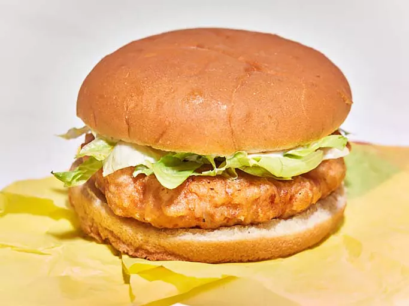

McChicken

Description
This copycat McChicken sandwich is made with well seasoned chicken breast and chicken thighs.
Freezing the patties before frying helps them keep their shape.
Ingredients
- 1 pound boneless skinless chicken breast, cut into 1-inch pieces
- 3/4 pound boneless skinless chicken thighs, cut into 1-inch pieces
- 1/2 teaspoon garlic powder
- 1/4 teaspoon white pepper
- 1 teaspoon paprika, divided
- 2 teaspoons salt, divided
- 1 cup flour
- 2/3 cup cornstarch
- 3/4 teaspoon pepper
- 6 hamburger buns, toasted
- 1 1/4 cups club soda
- oil for frying, or as needed
- shredded iceberg lettuce, to taste
- 3 tablespoons mayonnaise
Steps
- Combine chicken, garlic powder, white pepper, 1/2 teaspoon paprika, and 1 teaspoon salt in a food processor. Pulse until finely chopped and it forms a uniform mixture.
- Shape chicken mixture into 6 patties and freeze on a parchment or wax paper-lined baking sheet for 20 to 30 minute
- Heat oil to 375 degrees F (190 degrees C). Whisk together flour, cornstarch, remaining salt, remaining paprika, and pepper in a bowl. Lightly coat partially frozen patties in flour mixture and shake off any excess mixture and set patties aside.
- Add club soda to remaining flour mixture in bowl and whisk to combine.
- Working 2 to 3 at a time, dip patties into batter, allow excess to drip off and carefully place into the hot oil. Fry, while maintaining a temperature of 330 to 350 degrees F (165 to 175 degrees C), until golden brown, crispy, and cooked through, 5 to 6 minutes per batch. Drain on a wire rack set inside a paper towel lined rimmed baking sheet. Repeat with remaining patties.
- Serve patties on buns with shredded lettuce and mayonnaise.
Home